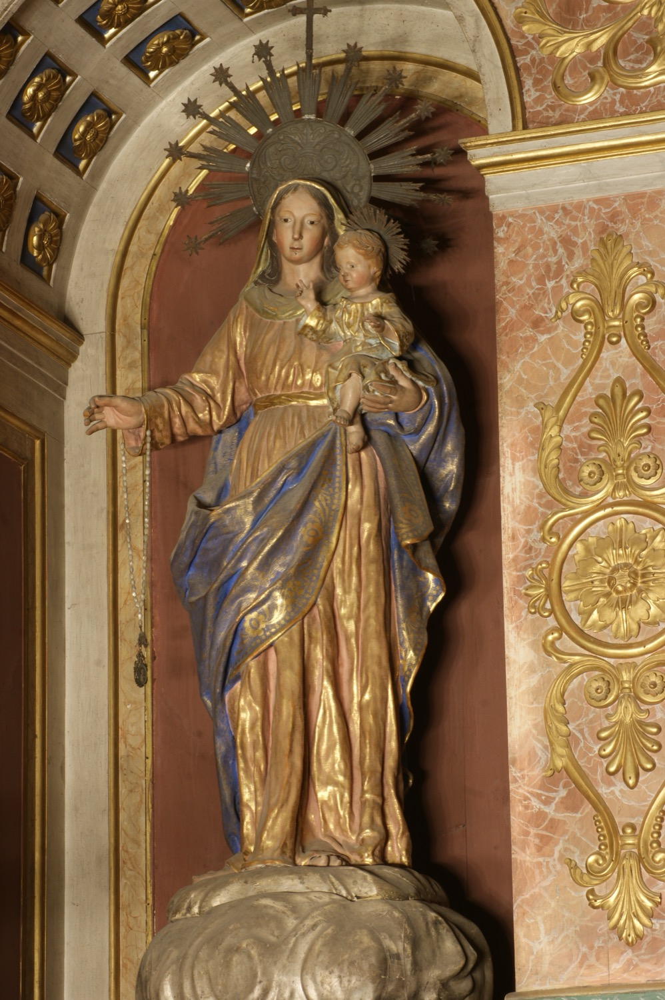

La Mare de Déu del Roser és una de les diverses advocacions de la Verge Maria. El seu nom prové de la paraula “roser”, que en català medieval podia referir-se tant a la planta com al rosari. Fins a finals del segle XVI el seu culte es limità principalment a l’orde dominic, però es difongué àmpliament després de la victòria a la batalla de Lepant (1571), que el papa Pius V va atribuir a la seva intercessió.
Aquesta escultura ens presenta la Mare de Deú del Roser en la forma habitual: dreta, vestida amb túnica marró (color de la terra, que simbolitza la humanitat de Maria) i mantell blau (color del cel, que simbolitza la seva vinculació celestial), amb el Nin Jesús sobre el braç esquerre i oferint un rosari amb la mà dreta. Aquest gest recorda la tradició segons la qual la Verge entregà a sant Domènec de Guzman el rosari com a eina de predicació contra els heretges albigesos.